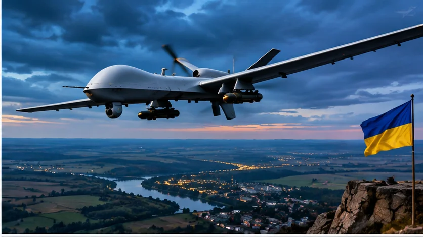

DRONE ARMS RACE!
New technology reportedly found in Russian attack drones intensifies Ukraine’s air-defense challenge

Original AI editorial illustration; not documentary photography.
TEXAS NEWS STUDIO — November 6, 2026. Original analysis and reporting context based on the attributed source below.
A changing aerial threat
A November 2 report from The Sun described newly identified technology in Russian jet-powered attack drones and an urgent Ukrainian effort to counter it. The story reflects a broader reality of the war: both sides are continually modifying unmanned aircraft, electronic warfare equipment and air-defense tactics.
Speed changes the equation
Faster drones can reduce the time available for detection, identification and interception. But speed alone does not determine whether a weapon succeeds. Radar visibility, flight path, altitude, electronic interference and the availability of interceptors all matter. Claims about particular drone capabilities require independent technical verification.
The defensive challenge
Ukraine relies on layered defenses, from radar and electronic warfare to guns and surface-to-air missiles. Expensive interceptors used against relatively inexpensive unmanned systems create a difficult economic problem. That is one reason Ukraine and its partners have emphasized cheaper counter-drone technologies and domestic production.
What to watch
The key questions are how widely any new Russian systems are deployed, whether Ukraine can adapt its defenses, and whether Western assistance keeps pace. Individual reports of a technological breakthrough should not be confused with proof of a decisive shift in the war.